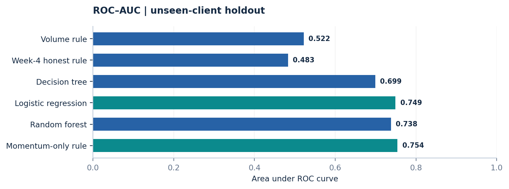
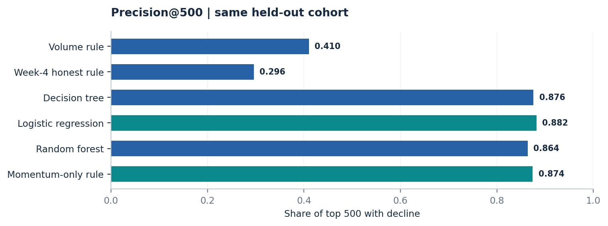
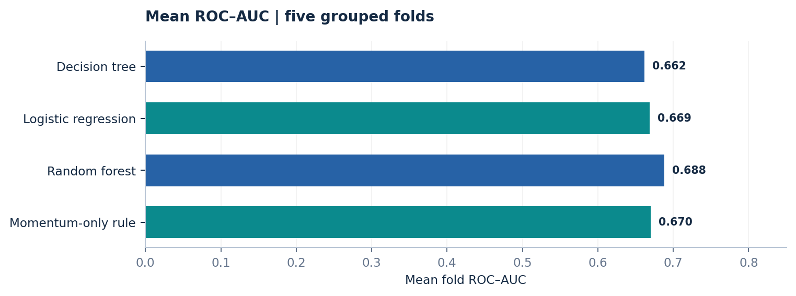
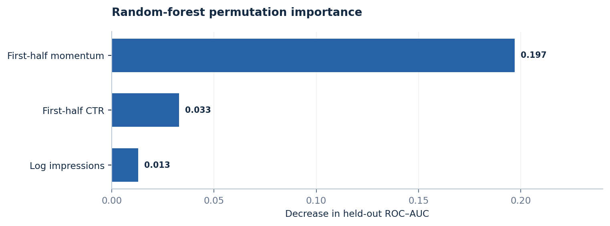
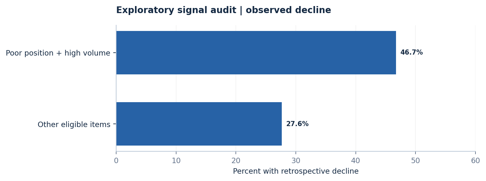
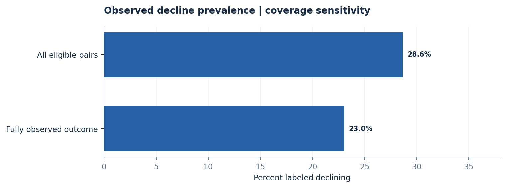
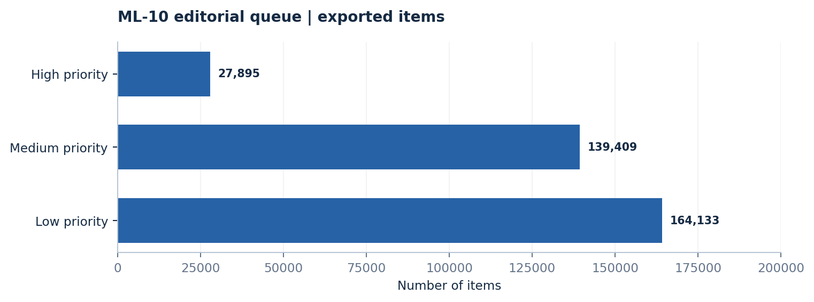

A simple signal is competitive
Momentum-only ranking achieved ROC-AUC 0.754, compared with 0.749 for logistic regression on the same held-out split. Complexity did not clearly improve discrimination in this evaluation.
Can early search-performance signals help editors prioritize at-risk content? A transparent, client-grouped comparison of simple ranking rules and machine learning models.
Can first-half search-performance signals help editors prioritize pages at risk of a second-half impressions decline? We analyzed March 2026 content-performance observations from the FlyRank ML Internship dataset, aggregating daily records into 92,548 content-item observations and evaluating on 24,886 items from ten held-out clients. We compared simple ranking rules with a decision tree, logistic regression, and random forest using only features available before the day-15 decision point. On one client-grouped split, logistic regression achieved ROC-AUC 0.749 and precision@500 0.882, while a single-feature momentum ranking achieved ROC-AUC 0.754 and precision@500 0.874 against a 36.9% decline base rate. The results support a human-reviewed content triage workflow, not claims of causal traffic improvement or guaranteed generalization.
FlyRank editors must decide which content items to inspect first when review capacity is limited. The operational decision is a ranked queue for human review at mid-month, not an automatic rewrite or publication decision. False positives consume reviewer time and can put healthy high-traffic pages at risk; false negatives leave potential declines unreviewed. The question is whether observable early-month signals offer better prioritization than transparent simple rules.
Source: FlyRank ML Internship dataset, daily fact_content_daily_performance table, March 1–31, 2026. The daily grain is client × content item × date; records were aggregated to 92,548 item-level examples across 40 clients for this experiment. Days 1–15 provide candidate predictors and days 16–31 define the retrospective outcome. The outcome is a greater-than-20% reduction in the sum of impressions from the first half to the second half (second-half impressions below 80% of first-half impressions). March is a mid-panel analysis month; the sealed final month and sample table were not used for the main evaluation. Client and content hashes serve as grouping keys, not predictors; raw client identifiers, URLs, private queries, and client-specific examples are excluded from this public report.
The feature set uses first-half impressions, CTR, average position, pageviews, engagement rate, availability of GA4, and first-half momentum (days 8–15 versus days 1–7). Derived numeric transformations include log-scaled impression and pageview totals. Models were trained with seed 42 and a client-grouped 75/25 split: 30 clients for training (67,662 rows) and 10 held-out clients for testing (24,886 rows), with zero overlap. We evaluated ROC-AUC, average precision and precision@K on the same held-out split. Honest comparisons include a low-volume ranking and a modified Week-4 rule using first-half signals only; the original Week-4 steep-decline rule used the outcome period and is excluded as a valid baseline. An intentionally leaky reference achieved AUC 0.911 and P@500 1.000, illustrating why future-window inputs are disallowed. Five grouped folds and a higher-coverage subset were used as sensitivity checks.
The held-out decline base rate was 0.369. The honest volume rule achieved AUC 0.522 and P@500 0.410; the modified Week-4 rule achieved AUC 0.483 and P@500 0.296. Decision tree: AUC 0.699, P@500 0.876. Logistic regression: AUC 0.749, P@500 0.882. Random forest: AUC 0.738, P@500 0.864. A simple momentum-only ranking achieved AUC 0.754 and P@500 0.874, rivaling the learned models. In five client-grouped folds, mean AUC was 0.662 for the tree, 0.669 for logistic regression, 0.688 for the forest and 0.670 for momentum alone. These differences are small relative to fold-to-fold variability. The forest's momentum permutation importance was about 0.197 AUC points, far larger than CTR (0.033).
The following figures use the same 24,886-item, 10-client holdout. The leaky future-window reference is intentionally excluded from legitimate model comparisons.


Five additional client-grouped folds reveal variation beyond the single holdout. Momentum is a useful transparent comparator, not proof that a particular method always wins.


The earlier ML-06 audit examined a poor-position/high-volume indicator as a descriptive review signal. This analysis is separate from the ML-08 model evaluation and should not be interpreted as causal evidence.

Missing Search Console observations can change the retrospective label itself. The high-coverage sensitivity analysis used a different subset and is not directly comparable to the main holdout as a controlled intervention. A 15-day first half and 16-day second half also make the threshold asymmetric.

Momentum-only ranking achieved ROC-AUC 0.754, compared with 0.749 for logistic regression on the same held-out split. Complexity did not clearly improve discrimination in this evaluation.
Logistic regression reached 88.2% precision@500 versus 87.4% for momentum alone: a difference of 0.8 percentage points, or four items among 500 ranked candidates.
Across five client-grouped folds, mean ROC-AUC was 0.669 for logistic regression and 0.670 for momentum. Fold variability and client concentration limit claims of consistent superiority.
This is observational, single-month, retrospective ranking work, not a controlled test of content interventions. A 15-day first half is compared with a 16-day second half, making the proxy asymmetric. The notebooks identify a zero-fill/data-availability ambiguity in Search Console observations; missingness may influence both the label and momentum. Top-500 recommendations are concentrated among a few large clients (86.4% from the three largest held-out clients). Client-grouped evaluation is more realistic than random row splitting but does not establish future-month performance. A high ranking score does not establish that a page needs changing, or that changing it would improve traffic.
The Week 7 exported review queue spans 331,437 content items from 55 clients, broader than the 92,548-item model cohort. Queue counts must not be mistaken for model evaluation results.

The underlying analysis is in the public GitHub repository under work/notebooks/: w03_data_contract.ipynb, w04_baseline_score.ipynb, w05_model.ipynb, w06_validation_audit.ipynb and w07_action_playbook.ipynb. Random seed: 42. Reported runtime versions: numpy 2.1.3, pandas 2.2.3, scikit-learn 1.6.1. Warehouse access is needed to rerun the original analysis; no private production rows are included in this page. The accompanying public summary JSON is a transcription of notebook-reported aggregate metrics, not an independent rerun. Original notebook execution outputs should be inspected for verification.
These links point to the original analysis stages in the repository. Their availability and executed outputs should be checked against the current public branch before submission.
↓ Download the complete research paper (PDF)
Evidence provenance: The charts reproduce aggregate metrics from the uploaded ML-02–ML-10 research reports and saved notebook outputs. They have not been independently recomputed against the restricted FlyRank warehouse. A full rerun requires authorized access and a fresh execution of the original notebooks.
Built on the FlyRank ML Internship dataset. Research synthesis and interpretation by Yasmeen Azmat Ali.
On smaller screens, swipe the table sideways to view all metrics.
| Method | ROC-AUC | Average precision | Precision@500 |
|---|---|---|---|
| Volume-only rule | 0.522 | 0.381 | 0.410 |
| Week-4 honest rule | 0.483 | 0.361 | 0.296 |
| Decision tree | 0.699 | 0.563 | 0.876 |
| Logistic regression | 0.749 | 0.644 | 0.882 |
| Random forest | 0.738 | 0.632 | 0.864 |
| Momentum-only rule | 0.754 | Not reported in extracted summary | 0.874 |
Evaluation: 24,886 held-out content items, 10 held-out clients, base rate 0.369.